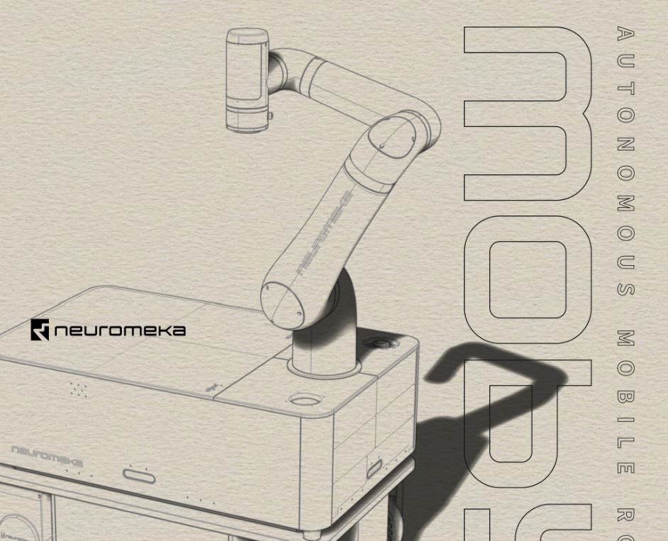

NEUROMEKA
인디(INDY)
모비(MOBY)
아이콘(ICON)
MOBY
뉴로메카의 'MOBY(모비)'는 협동로봇 'INDY(인디)'에 자율이동성을 제공하기위한
자율이동로봇(AMR)플랫폼입니다. 작업영역이 확대되고,센서 플레이트의 변경을 통해 다양한
센서들을 탑재할 수 있습니다.뿐만아니라 작업 목적에 따라
워크팔렛을 교체할 수 있어 배송,순찰,방역,안내 등 다양한 용도의 활용이 가능합니다.
